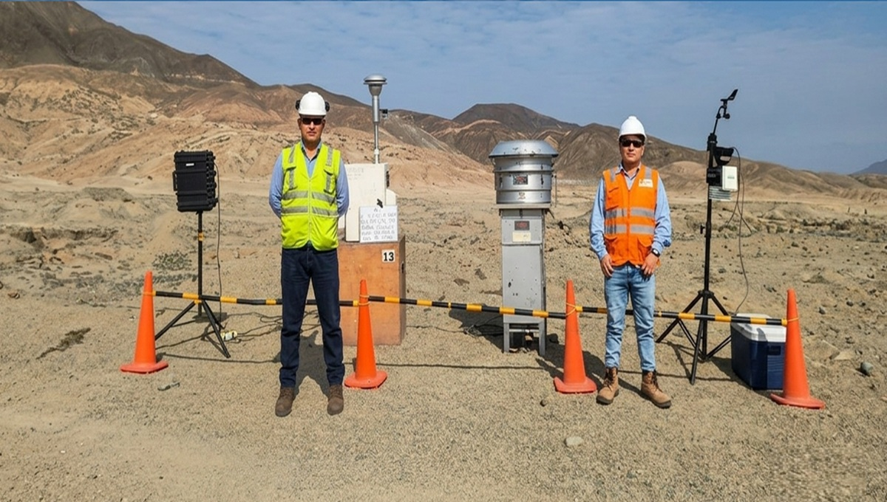
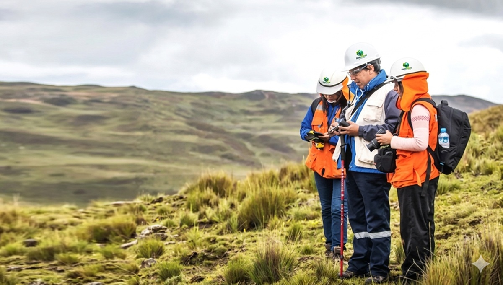
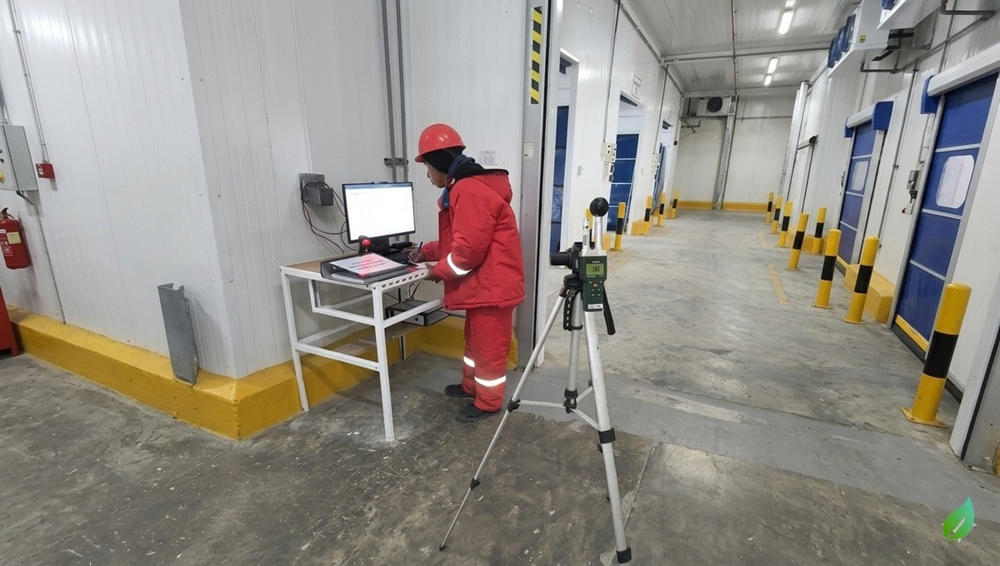
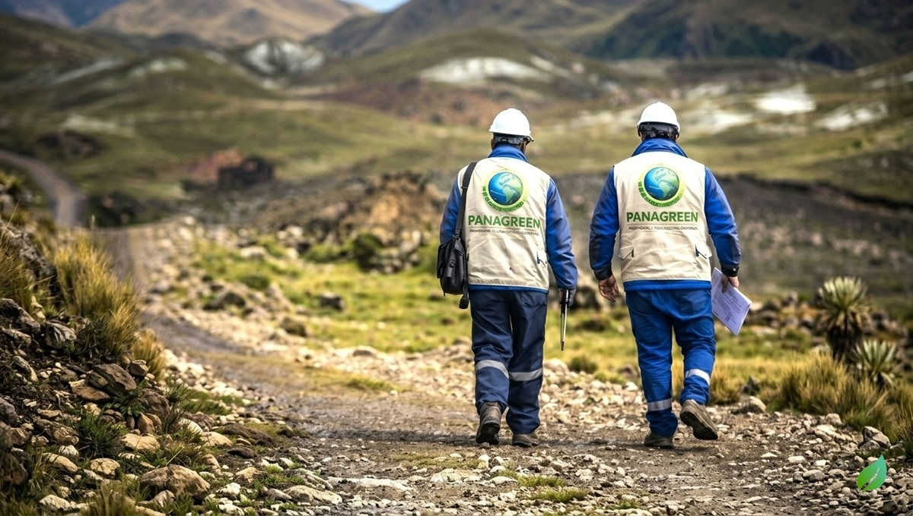
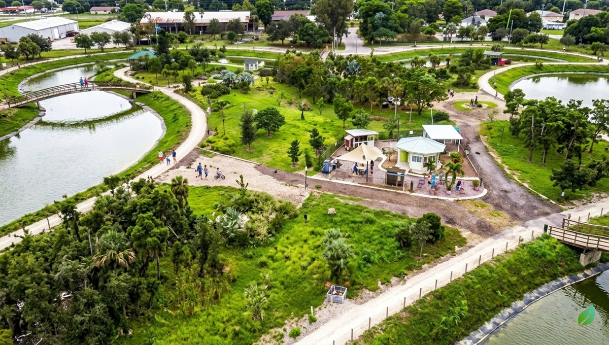
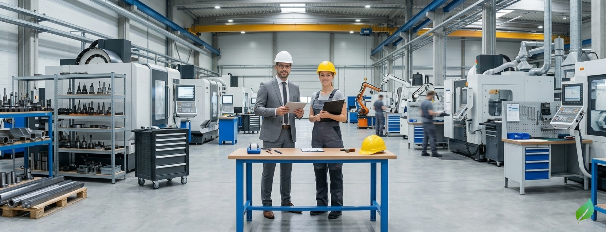
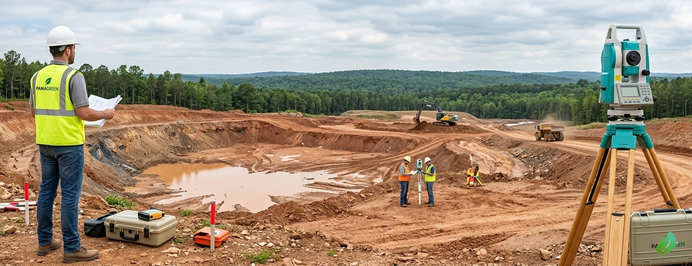
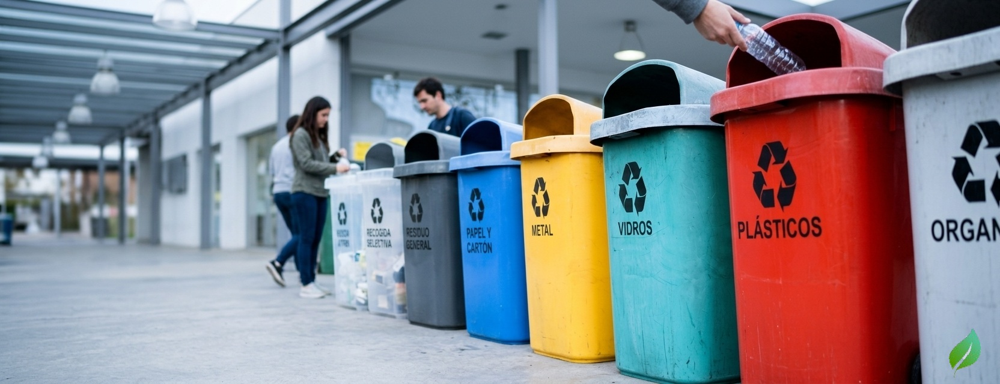
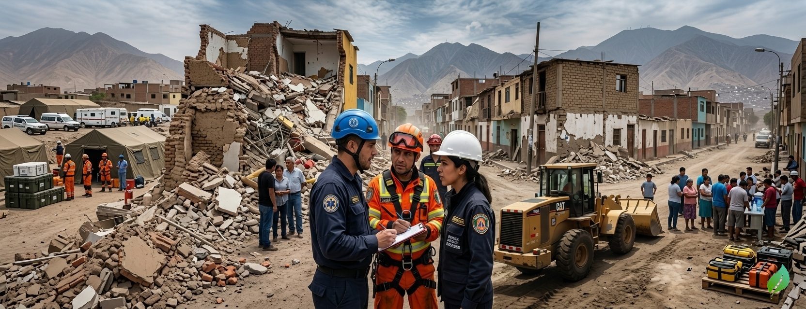

Monitoreo
AMBIENTAL
Contamos con el respaldo de profesionales con experiencia en entidades públicas y privadas.

Consultoría
AMBIENTAL
Soluciones sostenibles para proyectos de alto impacto ambiental.

Monitoreo
OCUPACIONAL
Soluciones sostenibles para proyectos de alto impacto ocupacional.

Expediente de
PERMISOS AMBIENTALES
Soluciones sostenibles para proyectos de alto impacto ambiental.

AMBIENTALES
Soluciones sostenibles para proyectos de alto impacto ambiental.
Estudios
SOCIALES
Soluciones sostenibles para proyectos de alto impacto social.

Implementación de
SISTEMAS DE GESTIÓN
Soluciones sostenibles para proyectos de alto impacto ambiental.

Topografía
Y GEOMÁTICA
Soluciones sostenibles para proyectos de alto impacto ambiental.
Ingeniería y
SOLUCIONES TÉCNICAS
Soluciones sostenibles para proyectos de alto impacto ambiental.

Gestión de
RESIDUOS
Soluciones sostenibles para proyectos de alto impacto ambiental.

Modelamiento y
SIMULACIÓN
Soluciones sostenibles para proyectos de alto impacto ambiental.

Gestión de
DESASTRES
Soluciones sostenibles para proyectos de alto impacto ambiental.
¿Quiénes somos?
Somos PANAGREEN, una empresa especializada en consultoría ambiental y servicios técnicos. Brindamos soluciones responsables y sostenibles que cumplen con la normativa nacional e internacional, con el propósito de generar confianza y valor en nuestros clientes y aliados estratégicos. Contamos con un equipo multidisciplinario de profesionales con amplia experiencia en el sector público y privado, comprometidos con la excelencia y la innovación.
CONOCENOS


NUESTROS LOGROS
Estudios Ambientales Aprobados
Monitoreo Ambiental
Planes de Manejo de Residuos

NUESTROS CLIENTES
Nuestra Ubicación
Santa Rosa del Naranjal Mz L Lote 15, Los Olivos, Lima - Perú